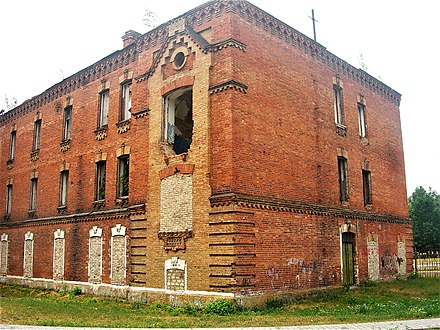
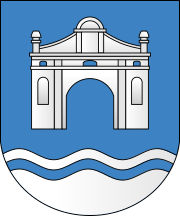
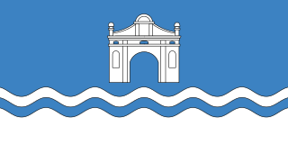
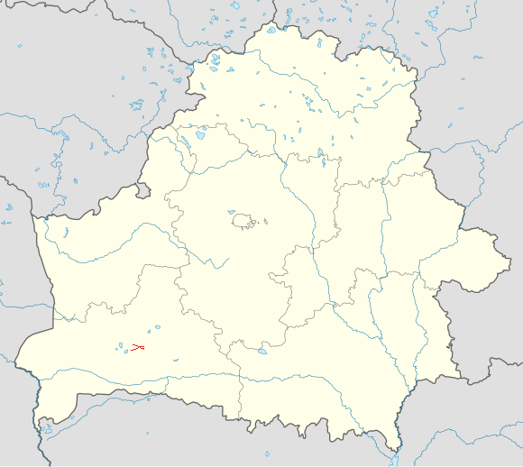

Моя малая родина!
Первое упоминание о городе Берёза восходит к 1477 году, когда владелец города Ян Гамшейосновал здесь костёл Святой Троицы. В конце XV века Берёза становится торговым городом, получив городскую хартию и право на проведение еженедельной ярмарки. В период с 1538 по 1600 был крупным центром кальвинизма.В 1915 году в ходе Первой мировой войны город был захвачен Германией и оказался вне политических и революционных процессов, происходивших в Российской империи. Германская оккупация продолжалась до 19 января 1919, когда город ненадолго был занят Красной Армией, уже 14 февраля 1919 в результате боя за Берёзу-Картузскую был отбит поляками. В ходе Советско-польской войны город дважды становился ареной сражений, в июле 1920 года он был вновь занят Красной армией, однако по завершении войны он, как и вся Западная Белоруссия, отошёл к Польше.
Достопримечательности:

Руины Картезианского монастыря
В первозданном виде ансамбль монастыря просуществовал до 1863 года. В наказание за активное участие в польском восстании 1863 года монахов-картезианцев российские власти закрыли монастырь, и в 1866 монастырский комплекс был частично разрушен.

Красные казармы
Кирпичи от монастыря были использованы для строительства «красных казарм».
Символы Березы:

Герб города Береза

Флаг города Береза
Береза расположена в Брестской области:

Из последних новостей:
- Педагог из Березы стала победителем республиканского фотоконкурса;
- Марш сквозь года:130-летие отпраздновал горнизон Березовского района.
Подробная информация о городе на официальном информационном ппортале Березы
Береза сейчас:
В 2024 году за высокие показатели, достигнутые в ходе проведения в 2023 году республиканского смотра санитарного состояния и благоустройства населённых пунктов Республики Беларусь, Берёза признана одним из победителей, награждена переходящим вымпелом.
В городе функционируют:
- Берёзовский филиал ОАО «Савушкин продукт» (бывший Берёзовский сыродельный комбинат) — переработка молока, кроме консервирования, производство сыров, масла животного, цельномолочной продукции, мороженого и прочих пищевых продуктов;
- ОАО «Берёзастройматериалы» — производство плитки керамической;
- ОАО «Берёзовский комбинат силикатных изделий» (юридический адрес находится за пределами города, в Берёзовском сельсовете) — производство стеновых блоков из ячеистого бетона и блоков ячеистого бетона для перегородок зданий, в 2020 году собственник был признан банкротом, в 2021 году завод выставлен на продажу за 18 млн долларов;
- ОАО «Теплоприбор» — выпускает следующую продукцию: вентиляторы, электрорадиатор «Ясельда», котлы отопительные, нестандартизированное оборудование, комплектующие к СЗК-8, линии по сортировке твёрдых бытовых отходов, торговые павильоны, контейнеры для мусора — 11 м³, машинки для резки кровли, по состоянию на 1 сентября 2021 года из-за тяжёлого финансового положения находится в стадии санации;
- ОАО «Берёзовский мотороремонтный завод» — осуществляет капитальный ремонт тракторно-комбайновых двигателей, узлов и деталей, изготовление новых деталей; изготовление крепежных метизных изделий, запасных частей к тракторам, запасных частей к сельхозмашинам;
- РУПП «Берёзатара» — производство упаковки из лёгких металлов — крышки металлической СКО-1058; СКО-1-82; ПТ-51, по состоянию на 1 сентября 2021 года предприятие признано банкротом и находится в стадии ликвидации;
- ОАО «Берёзовский мясоконсервный комбинат»;
- ОАО «Берёзовский комбикормовый завод»;
- ОАО «Нарутовичи»;
- Гостиница «Ясельда».